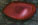

イース 6 -ナピシュテムの匣-
| 概要 | 情報 | ボス戦 |
| 穴場 | か･タマリ場 | 正統･穴場 |
| アイテム一覧 | 攻略チャート | 地図 |
| 敵キャラ一覧 | 変な写真 | Ys VI 攻略へ |
| 1 | 2 |
| 画 像 | 行 動 | 所 持金 | 所 持エメル | ア イテム | 出 現場所 |
| 通称：ハナ Dark アドルが近づくと、混乱、毒作用がある霧を吹きかけてくる。 自らが動かないのがせめてもの救い。 |
20 | 30 | アムリタ茸 |
クアテラ樹海 後半 | |
| 通称：何とかザウルス 改 見た目通りの恐ろしいモンスター。 電流をバチバチさせながらアドルへ突進すると、当然彼は吹き飛びます。 また、接触するだけで混乱と加重の作用があるから注意。 |
20 | 30 | アムリタ茸 薬草 |
クアテラ樹海 後半 | |
| 通称：魚 アドルが射程内にはいると泡をピンポイント発射。非常に射程が長いので注意。 また、水中にいる時はまず攻撃を加えられない。 |
400 | クアテラ樹海 後半 緑水洞 |
|||
| 通称：スライム 緑 非常に小さい敵のために、ブリランテやリヴァルトでの攻撃は難しい。以外とイクシリルだと当たります。 むやみに接触すると毒状態になるので注意。 |
65 | 30 | カミオの花 | 緑水洞 | |
| 通称：スライム 青 スライム 緑、同様攻撃が当たりにくい敵です。下段突きをするか、逃げるか･･･ むやみに接触すると加重状態になります。 |
60 | 30 | 緑水洞 | ||
|  | 通称：スライム 赤 スライム系は時々ジャンプするので意外と運動能力は高いようです。 むやみに接触すると混乱状態になります。 |
60 | 30 | オロイの実 | 緑水洞 |
| 通称：スライム 茶 特にスライム系に攻撃を与えにくいのはリヴァルトです。剣技を使用中はヒットしますが、通常ではまず当たりません。 むやみに接触すると呪い状態になります。 |
60 | 30 | オロイの実 | 緑水洞 | |
| 通称：カエル アドルを発見すると、口からウジのような生物を放出して逃げていく生き物です。本人はいっさい攻撃しません。 敵が強い緑水洞の冒険では、こいつにウジを出させて、ブラッドネイルで体力回復はよくやりますよね。 |
120 | 30 | 薬草 アムリタ茸 |
緑水洞 | |
| 通称：ウジ カエルが口から吐くモンスター。下段突き以外ではまず攻撃が当たらない。 攻撃力はないが、いっぱいると目障り。接触するとごくまれに毒状態になります。 |
緑水洞 | ||||
| 通称：ヤドカリ 普段は貝の中に身を隠してじっとしていますが、アドルが近づくと襲いかかってきます。 音無の鈴を装備していない限りいかなる攻撃を加えられません。 |
180 | 50 | 薬草 | 緑水洞 後半 | |
| 画 像 | 行 動 | 所 持金 | 所 持エメル | ア イテム | 出 現場所 |
| 画 像 | 行 動 | 所 持金 | 所 持エメル | ア イテム | 出 現場所 |
| 通称：スライム 紫 最強、最悪のスライム。接触すると、毒、混乱、呪い、加重の全ての異常状態になります。 レベルが低いうちは逃げ回った方が無難です。 |
190 | 60 | 蜂蜜 | 緑水洞 後半 | |
| 通称：影 時々現れて、8方向にレーザーを発射し、また消える。こんな攻撃を繰り返します。 虹の欠片を装備していないと、恐ろしいモンスターへと変貌します。 |
160 | 50 | 薬草 | 緑水洞 後半 | |
 |
通称：おおぐも 見た目はミトス参道にいるクモが大きくなっただけですが、非常に強いです。しかし、彼らは小さな段差ですら登ることができないので、危険を感じたら高台へ 逃げましょう。 |
180 | 50 | 骨付き肉 | 緑水洞 後半 |
| 通称：スライム 銀 接触しても異常状態にはなりませんが、攻撃力も守備力も非常に高いモンスター。 倒すと大量のエメルを残してくれます。 |
160 | 57 | 緑水洞 | ||
| 通称：水草 動かないとはいえ、半追尾式の弾を発射してきます。しかも、一定時間経つと弾が破裂し、攻撃範囲が拡大します。 動きも攻撃周期も遅いので逃げてしまった方が無難かもしれません。 |
180 | 50 | 薬草 | 緑水洞 | |
| ロムン兵 槍を持ち、不審者をを発見すると勢いよく突進してきます。先制攻撃を食らうのは覚悟の上で、懐に飛び込んでとどめを刺しましょう。 アドル君は彼らを殺しているのか、峰打ちにしているのか･･･ 注意：槍で刺されている赤毛の剣士はロムン兵ではありません。 |
210 | 50 | 薬草 | ロムン戦艦 | |
 |
通称：影 アドル君 写真ではたくさんいますが、普通は1体か2体です。 上の通称：影と出会った時に、虹の欠片を装備していないとこのような姿で襲ってきます。 はっきり言って、ザコキャラの中で一番ステータスが高いので注意しましょう。 |
180 | 50 | 薬草 | 緑水洞 後半 |
| 通称：拠点防御装置 火炎放射タイプ 不審者が近づくと、強力な火炎を放出しながら回転し続けます。不審者が近くにいると火を吐き続けるので、注意して攻撃しましょう。 |
210 | 800 | 薬草 | キシュガル | |
| 通称：裁縫道具 知っていますよね? こんな形の道具。 それはよしとして、この敵は頭の回転する部分が出ている時は正面からはダメージを与えられません。下段突きか、背面もしくは横に回って攻撃しましょう。 |
201 | 800 | 骨付き肉 | キシュガル | |
 |
通称：バーちゃん 青色 アドル君が接近すると、回転しながら青色の光球を乱射します。実は、1周分+αの光球を放出しますので、ジャンプしてよけても奇襲を食らうことがあるの で、注意しましょう。 |
210 | 100 | 蒼の秘薬 | キシュガル |
| 画 像 | 行 動 | 所 持金 | 所 持エメル | ア イテム | 出 現場所 |
| 画 像 | 行 動 | 所 持金 | 所 持エメル | ア イテム | 出 現場所 |
| 通称：チョウチン アドルを発見すると、赤く発光しつつ巨大化します。そして、一定時間経つと勢いよく爆発します。 早めに倒さないと痛い目に遭います。もし間に合わないと感じたら、早めに逃げましょう。 |
260 | 800 | 蜂蜜 | キシュガル | |
| 通称：回復マシーン 傷ついた敵がいると、光球を放ってHPを50回復させます。アドルがその光球に触れるとHPが50回復するので便利です。 ただし、傷ついた敵がいない場合は何もせず、ひたすらアドルから逃げ回ります。 |
125 | キシュガル | |||
| 通称：ジーちゃん アドル君を発見すると回転しながら襲ってきます。回転中は、下段突き以外はダメージを与えられません。 また、回転が止まってもすぐにまた回転を始めるので早めに攻撃しましょう |
227 | 800 | 蒼の秘薬 | キシュガル | |
| 通称：ピピちゃん アドルを発見すると変なビームを連射してきます。ある程度連射すると、数秒間フラフラと動き、またビームを打ち始めます。 小さいので狙いづらいです。 |
227 | 800 | 骨付き肉 | キシュガル | |
| 画 像 | 行 動 | 所 持金 | 所 持エメル | ア イテム | 出 現場所 |
| 1 | 2 |
| 概要 | 情報 | ボス戦 |
| 穴場 | か･タマリ場 | 正統･穴場 |
| アイテム一覧 | 攻略チャート | 地図 |
| 敵キャラ一覧 | 変な写真 | Ys VI 攻略へ |
YS VI -THE ARK OF NAPISHTIM-
イース 6 -ナピシュテムの匣-
| 目次へ戻る | ページの上部へ |